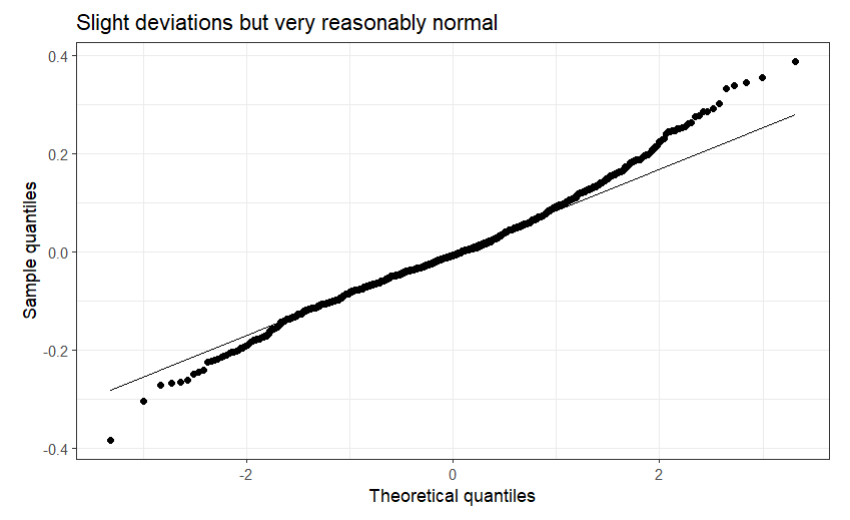
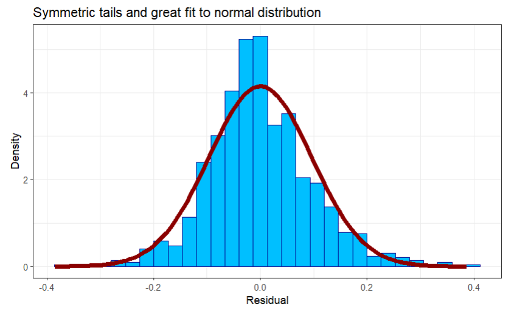
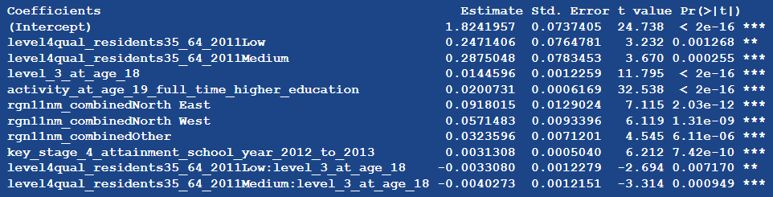

STA 210 - Final Project
Introduction
Project motivation + research question
Current research supports the theory that an individual’s educational attainment (number of degrees, general educational achievement) has a strong positive relationship with wages earned later in life (United States Department of Labor, 2023). Operating under the assumption that this research is accurate, we can thus assume that proper knowledge of factors related with educational attainment would allow for better estimation of earnings later in life. Thus, this study builds upon prior research and attempts to identify longitudinal variables (variables over time) with a relationship with educational attainment.
Dataset explanation
In order to achieve our goal of identifying variables statistically significant in relation to educational attainment, we used a dataset sourced from TidyTuesday and The UK Office for National Statistics. The UK Office for National Statistics is the recognized statistical institution of the nation that carries out the census for England and Wales in addition to the collection of a multitude of other data made publicly available. The selected dataset, titled “Educational attainment of young people in English towns” contains a variety of variables detailing the educational attainments and qualifications achieved by a given student population in each town in the UK during 2012 (the 2012 key stage 4 cohort). Key stage 4, which is the American equivalent of freshman and sophomore year, is the two years in which students (typically aged 14-16) study for and take General Certificate of Secondary Education (GCSE) exams. The students who were in key stage 4 in 2012 Each row in the dataset represents a given town in the UK. There are 1104 towns documented, each one listed with 30 variables relating to the educational attainment of the 2012 key stage 4 cohort and the respective town demographics. Our outcome variable is the town-wide average of the highest qualification (degree) achieved by each individual in the 2012 key stage cohort by the time they reached the age of 22, and our predictors are various other data about the 2012 key stage cohort before they reached the age of 22.
Relevant variables
These variables included in our final model were tested for statistical significance as related to the outcome variable of educational attainment. This is outlined in our methodology section. The five final relevant variables are as follows:
rgn11nm_combined - This is the region of the UK in which the town is located. There are four factors: Northeast, Northwest, South, and Other.
level4qual_residents35_64_2011 - This is the proportion of the towns population aged 35 to 64 that as a qualification of level 4 or above (first year of an American bachelor’s degree). The proportions were categorized into high, medium, and low.
level_3_at_age_18 - This is the proportion of the town’s 2012 stage 4 cohort that achieved level 3 qualifications (equivalent of U.S. high school diploma) by the age of 18. As a proportion, this variable has a possible range of 0 to 100 but an actual range of 16.53543 to 85.71429.
activity_at_age_19_full_time_higher_education - This is the proportion of the town’s 2012 stage 4 cohort that was enrolled in full-time higher education by the age 19. As a proportion, this variable has a possible range of 0 to 100 but an actual range of 7.874016 to 73.44633.
key_stage_4_attainment_school_year_2012_to_2013 - This is the proportion of students (in the key stage 4 cohort ) in the 2012 to 2013 school year that achieved a grade of A - C on five or more General Certificate of Secondary Education (GCSE) exams. This variable is a measure of educational achievement at the age of ~16 on UK standardized tests. Because this variable is a proportion, it has a possible range of 0 to 100 but an actual range of 33.33333 to 92.85714.
The outcome, highest_level_qualification_achieved_b_age_22_average_score, has a range of 2.566929 to 5.142857.
United States Department of Labor. (2023, September 6). Education pays. U.S. Bureau of Labor Statistics. https://www.bls.gov/emp/chart-unemployment-earnings-education.htm
Methodology
In order to construct our final model, we chose variables that were statistically significant and relevant (theoretically speaking) to our predictor. All initially considered predictors later eliminated for being statistically insignificant are:
population_2011 - The population of the selected town (observation) in 2011 (continuous).
size_flag - The size of the town, categorically grouped into cities, large towns, small towns, etc. (categorical).
coastal - Whether or not the town is coastal or not (categorical).
coastal_detailed - Incorporates the town’s size along with whether or not it is coastal (categorical).
job_density_flag - Whether a town is working, residential, or mixed (categorical).
income_flag - Whether a town is low-, mid-, or high-income (categorical).
We eliminated all of the above variables for having p-values above 0.05 and thereby being statistically insignificant. We then iteratively tested for any statistically significant interaction terms between the remaining variables. Initially, the variable rgn11nm (region of UK town is in) had many more factors; however, because not all of them were significant, we combined the categories statistically- and logically-soundly. The factors Southeast and Southwest were combined into statistically significant factor South, Northeast and Northwest were left as-is because their coefficient p-values were below 0.05, and all other factors were combined into factor Other (p-value of 6.11 * 10^-6). This was the only variable manipulation we performed. In terms of transformations, our assumptions were sound and allowed us to conclude that no variable transformations were necessary.
Our linear model’s R-squared metric (both multiple and adjusted) is above 92%. Over 92% of the variation in education scores is explained by our model. The residual standard error, a measure of the standard deviation of the residuals from the predicted values, is 0.09655.

All variables were tested for multicollinearity and passed; the F-statistic has a p-value of 2.2*10^-16, which is highly statistically significant. We can reject the null hypothesis of all coefficients being 0 with extremely high confidence.

The residual plot shows great symmetry across the residual = 0 line, indicating that the linearity assumption in the parameters is indeed met. Visually, homoscedasticity looks reasonable, but there is more variance when fitted values are 0.

Code was used to find 6 quantiles, split the observations into quintiles based on those quantiles, and then calculate the variance of the residuals for each quintile. From there, we quantitatively assessed homoscedasticity, and each decile’s variance was reasonably close to all others, with the exception being where the fitted values are 0.

The Breusch-Pagan test finds statistically significant evidence for heteroscedasticity. However, we moved forward with this model because the heteroscedasticity does not bias the estimates for the coefficients.
We also explored transformations in the predictors but did not find them worth pursuing. Specifically, we tried Box-Cox transformations.
The quantile-quantile plot shows that the residuals roughly follow a normal distribution, with the left tail deviating slightly and seeming heavier, but when combined with the histogram, appear sufficiently normal for our purposes.


Independence of residuals: The observations are unique per region, meaning no regions are double counted and each is disjoint, so the observations are fully distinct from one another. Thus, the errors are independent, which implies the predicted values are independent.
Results
We predicted the average highest education qualification for a city/town achieved that ranged between 2.57 and 5.14 in our dataset. Our predictors were all untransformed and one interaction term was included:

All of our coefficients are statistically significant at the 0.05 level. All predictors except for level4qual_residents35_64_2011Low:level_3_at_age_18 and level4qual_residents35_64_2011Medium:level_3_at_age_18
increased average highest education when each one was increased on its own, holding the other predictors constant. The two negative slopes were minimal in magnitude. Our linear model presents compelling evidence to support the idea that all of these our predictors to have a relationship with average highest education in a town/city, and all except the interaction terms have a positive relationship.
Discussion
VARIABLE DISCUSSION
In discussing our model, we will first go through each variable and consider the possible reasoning behind its coefficient. To begin, rgn11nm_combined indicated that all towns not in the South were predicted to have higher average highest qualifications in the key stage 4 2012 cohort than towns in the South (Northeast, 0.0918015; Northwest 0.0571483; Other 0.0323596). This is in line with another article written using this dataset, “Why do children and young people in smaller towns do better academically than those in larger towns?” which found that students in more rural areas achieve higher levels of educational achievement than those in more urban areas. These findings are in line with those of this model, which illustrates that towns nearer to London (the UK’s main metropolitan area, located in the South), are predicted to have lower averages of highest qualifications achieved. We find it notable that the Northeast and Northwest regions have higher average highest qualification compared to the South, given that Oxford is in the South [West].
The next variable, level_3_at_age_18, measures the proportion of the town’s students who were a part of the 2012 key stage four cohort that obtained level 3 qualifications, the U.S. equivalent of a high school diploma. The coefficient for this variable, 0.0144596 makes sense–one would expect a town with a greater proportion of students who achieved level 3 qualifications by the age of 18 to have a a higher average highest qualification level by the age of 22. key_stage_4_attainment_school_year_2012_to_2013 has a similarly logical coefficient estimate, 0.0031308, which indicates that a town with a 2012 key stage 4 cohort that scored higher on GCSE is predicted to have achieved higher average highest qualifications by the age of 22. Thus, a town with students that performed higher on standardized exams is expected to have a young adult population having obtained degrees of higher status.
The last significant base-level variable in our final model, level4qqual_residents35_64_2011, served as a measure of educational attainment of the adults (parents) in the community surrounding the stage 4 cohorts of the time. The coefficients for this variable, 0.2471406 (low) and 0.2875048 (medium), are not exactly what one would expect. Logically, it would make sense for these coefficients to be negative; towns with fewer adults with high-status degrees would then have correspondingly lower average highest number of degrees. However, this is not the case. Towns with both low and medium proportions of adults aged 35 to 64 with level 3 or above qualifications are expected to have higher average highest number of qualifications among 22-year olds from a standardized school year. This may be because of educational investments targeting areas without great parental education to help compensate for the previous injustice.
The final variable included in our model is an interaction term between level4qqual_residents35_64_2011 and level_3_at_age_18, meaning that the relationship between the proportion of students with qualifications above level 3 at age 18 and the average highest qualifications of students at age 22 depends on the number of adult residents with qualifications above level 4. The coefficients for these terms are intuitive; the interaction terms corresponding to low and medium proportions of adults with above level 4 qualifications are negative, meaning that an increase in proportion of students with above level 3 qualifications at age 18 will correspond to the greatest increase in average highest number of qualfications at age 22 for towns in which the level4qual_residents35_64_2011 is high. Perhaps this is the case because a students with level 3 qualifications will go on to pursue further qualifications at a greater rate if they are surrounded by adults who have obtained qualifications above level 4 because of their positions as role models and influences, whether actively or passively.
In general, the findings of this model are fairly tailored to the dataset used. The indicators used, though transferable in concept to other possible predictors, are unique to the data collected for this dataset and are thus difficult to generalize for other relationships. This model and dataset are also extremely unique to the structure of education in the UK. Although the concept of qualifications is transferable to the degree system of the United States, there are other patterns that are unique to the makeup of the United Kingdom. For example, the observation that educational attainment and degree obtainment is greater in smaller towns rather than cities is not in line with the observed truth in the United States, where cities are known to be centers of innovation, opportunity, and education. Because of these idiosyncrasies and others, the conclusions drawn from this study cannot be widely applied across all educational systems outside of the one being studied.
OTHER LIMITATIONS + FUTURE RESEARCH
Our data potentially captures individuals’ locations at the time of surveying, which could assign them to towns different from where they received their earlier education, notably year 13 and earlier, which we are interested in. Two potential causes of this would be relocating for work or college. Whether or not this is a limiting factor depends on how exactly the data was collected.
Additionally, the economic variable we considered in a model but did not make it to the final model, the percentage of individuals earning above £10,000 at age 19, is grounded in the context of 2012’s economy. If the same variable was used today, given inflationary trends, it would change the meaning of the variable because apprenticeships could now be above the cutoff, when as of the 2012 data, only those that have high-paying jobs at age 19 would be included. High-paying jobs we argue are associated with a higher level of education, and our data supports this. We also grouped a variety of regions into the Other category, which increased statistical significance but reduced granularity or specific insights.
Future research could investigate how individuals perform in college (if they go) to see how well their earlier studies prepared them for it. Additional variables that, if there were in the dataset, would aid in predicting education score are: average income in area, student:teacher ratio, school funding per pupil, and poverty percentage. We are fascinated by the reason that an increase in population is associated with a decrease in education scores, which is in contrary to our intuition for the United States education system, and believe it is worth additional exploration. Future research could deploy a multinomial model to predict regions or types of towns/cities based on education statistics as well, which would target a different question than the one we are addressing, but an interesting one nonetheless.